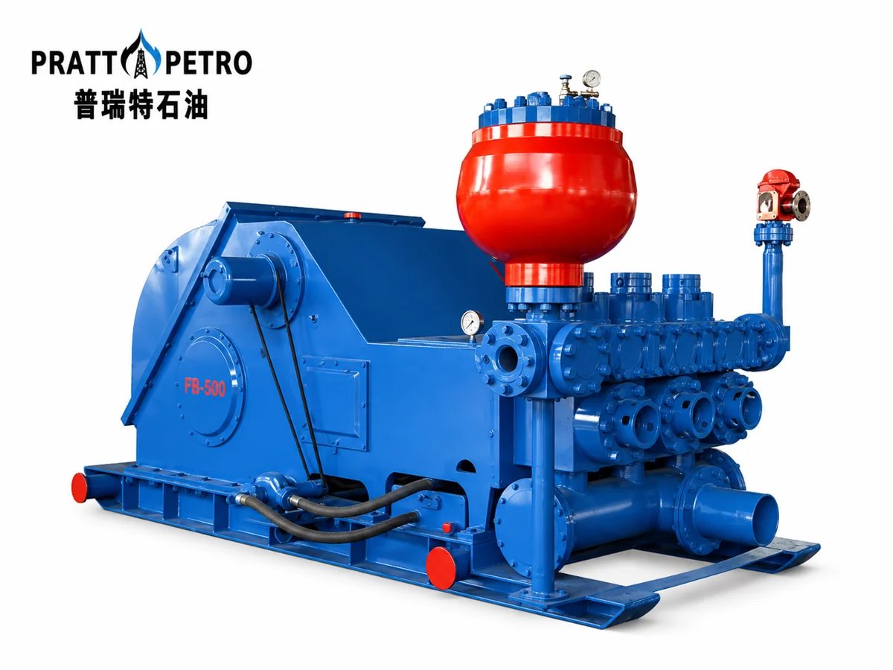

Mud Pump Parts / MODEL RANGE
3NB-2200 Mud Pump Spare Parts
Pratt Oil supplies a complete range of spare parts for 3NB-2200 triplex mud pumps used in oil and gas drilling operations.
Send your part number, pump nameplate, drawing or component photos to confirm the correct replacement.

MAINTENANCE / REPAIR / OVERHAUL
Replacement parts we supply
- Fluid end modules
- Liners and pistons
- Valves and valve seats
- Piston rods and extension rods
- Crossheads and guides
- Crankshafts and pinion shafts
- Connecting rods and bearings
- Valve covers and liner retainers
- Suction and discharge manifold parts
- Seals, gaskets, and repair kits
PART NUMBERS / TECHNICAL REFERENCE
3NB-2200 parts reference
Confirm part numbers, dimensions and equipment configuration before ordering.
Use this reference to prepare your inquiry. Availability and compatibility are confirmed with your quotation.
310 parts in this reference
Download parts list (CSV) ↓| Part number | Description |
|---|---|
| NB2200G.01.00 | Frame assembly |
| NB2200G.05.01.00 | Valve packing |
| NB2200G.02.00 | Crankshaft assembly |
| NB2200G.05.02.00 | Discharge cylinder assembly |
| NB2200G.03.00 | Pinion shaft assembly |
| NB2200G.05.03 | Valve cover |
| NB2200G.04.00 | Crosshead assembly |
| NB2200G.05.04 | Discharge pipe sealing ring |
| NB2200G.05.00 | Fluid end assembly |
| NB2200G.05.05 | Discharge pipeline |
| NB2200G.06.00 | Power end lubrication assembly (external) |
| NB2200G.05.06 | Washer: 39 |
| NB2200G.07.00 | Base |
| NB2200G.05.07 | Wear-resistant disc |
| NB2200G.08.00 | Spray system assembly |
| NB2200G.05.08 | Cylinder liner flange |
| NB2200G.09 | Indicator |
| NB2200G.05.09.00 | Piston |
| GB/T827-1986 | Rivet: 3×10 |
| NB2200G.05.10.00 | Spray pipe assembly |
| YWZ-200T | Temperature and liquid level indicator |
| NB2200G.05.11 | Liner (standard) |
| YD | Check valve for level indicator |
| NB2200G.05.12 | Liner (bimetallic) |
| GB/T95-2002 | Washer: 16 |
| NB2200G.05.13 | Cylinder liner end cover |
| GB/T5781-2000 | Bolt: M16×45 |
| NB2200G.05.18.00 | Clamp assembly |
| NB2200G.10 | Crosshead opening cover |
| NB2200G.05.19 | Piston rod |
| NB2200G.11 | Sealing gasket (I) |
| NB2200G.05.20 | Cylinder liner retaining ring |
| NB800G.19.00 | Drain cover |
| GB/T3452.1-2005 | O-ring: 236×7-G-S |
| NB800G.20 | Sealing washer |
| NB2200G.05.21.00 | Cylinder liner packing cover |
| GB/T5781-2000 | Bolt: M12×35 |
| NB2200G.05.22 | Piston sealing ring |
| GB/T67-2000 | Screw: M4×12 |
| NB2200G.05.23.00 | Piston nut |
| NB2200G.12 | Nameplate |
| NB2200G.05.24 | Cylinder liner sealing ring: φ190 |
| GB/T5780-2000 | Bolt: M16×60 |
| NB2200G.05.25 | Cylinder liner sealing ring: φ220 |
| GB/T41-2000 | Nut: M16 |
| NB2200G.05.26 | Cylinder liner sealing ring: φ260 |
| GB/T5782-2000 | Bolt: M27×105 |
| NB2200G.05.27 | Wear-resistant disc sealing ring |
| GB/T6170-2000 | Nut: M27 |
| NB2200G.05.28 | Cylinder sealing ring |
| GB/T93-1987 | Washer: 27 |
| NB2200G.05.29.00 | Shim pack |
| NB2200G.13 | Adjusting shim |
| GB/T3452.1-2005 | O-ring: 243×7-G-S |
| NB2200G.14.00 | Thrust seat |
| GB/T5783-2000 | Bolt: M22×55 |
| GB/T5782-2000 | Bolt: M27×95 |
| GB/T5782-2000 | Bolt: M27×90 |
| NB2200G.15.00 | Rear blanking plate |
| NB2200G.05.30 | Threaded plug: NPT1 1/2 |
| NB2200G.16 | Sealing gasket (II) |
| NB2200G.05.31.00 | High-pressure valve assembly |
| GB/T5781-2000 | Bolt: M12×30 |
| NB2200G.05.32.00 | High-pressure valve assembly: API 6 |
| GB/T95-2002 | Washer: 12 |
| NB2200G.05.33 | Valve spring |
| NB800G.09 | Sealing washer |
| NB2200G.05.34.00 | Valve stem guide |
| NB800G.10.00 | Vent cap |
| 243 | Anaerobic sealing adhesive |
| NB2200G.17.00 | Blanking plate for inclined window |
| NB2200G.05.35 | 90° elbow: NPT3/8" |
| NB2200G.18 | Sealing gasket (III) |
| NB2200G.05.36 | Buffer washer |
| NB2200G.19.00 | Suspension support |
| NB2200G.05.37 | Valve cover sealing ring |
| NB2200G.20.00 | Crane |
| NB2200G.05.38.00 | Suction cylinder assembly |
| NB2200G.21.00 | Cover plate assembly |
| NB2200G.05.39 | Suction flange (II) |
| YK-150 | Dual-scale vibration-resistant pressure gauge: (80MPa / 11600 psi, flanged) |
| GB/T3452.1-2005 | O-ring: 345×7-G-S |
| NB2200G.22 | Stud: M30×3-6g×245 |
| NB2200G.05.40.00 | Suction pipeline |
| NB2200G.23 | Nut: M30×3-6H(SPL) |
| NB2200G.05.41 | Suction flange (I) |
| NB2200G.05.42.00 | Suction pulsation dampener |
| NB2200G.24.00 | KB-45H pulsation dampener |
| NB2200G.05.31(A).00 | High-pressure valve assembly |
| NB2200G.25.00 | Discharge five-way manifold assembly |
| NB2200G.05.02.01 | Discharge fluid cylinder |
| SY/T5127-2002 | Sealing gasket ring: BX169 |
| NB2200G.05.02.02 | Stud: M39×2-6h-M39×3-6g×125 |
| SY/T5127-2002 | Sealing gasket ring: BX152 |
| NB2200G.05.02.03 | Nut: M39×3-6H(SPL) |
| NB2200G.26.00 | Safety valve seat |
| NB2200G.05.02.04 | Stud: M30×2-6h-M30×3-6g×205 |
| NB2200G.27.00 | JA-3H shear pin safety valve |
| NB800G.24.06A | Nut: M30×3-6H(SPL) |
| NB2200G.28.00 | Supplied spare parts |
| NB2200G.05.02.05 | Stud: M48×2-6h-M48×3-6g×520 |
| NB2200G.29.00 | Supplied tools |
| NB2200G.05.02.06 | Nut: M48×3-6H(SPL) |
| NB2200G.01.01.00 | Frame |
| NB2200G.05.02.07 | Stud: M48×2-6h-M48×3-6g×240 |
| NB2200G.01.02 | Main bearing cover |
| NB2200G.01.03 | Gasket |
| NB2200G.05.38.01 | Suction cylinder |
| NB800G.01.04 | Connector: NPT3/4-NPT3/4 |
| NB2200G.05.38.02 | Suction cylinder sealing ring |
| NB800G.01.05 | Threaded plug: NPT3/4 |
| NB2200G.05.38.03 | Pressing plate |
| NB2200G.02.01.00 | Main bearing end cover |
| NB2200G.05.38.04 | Stud: M24×2-6h-M24-6g×75 |
| NB2200G.02.02 | Main bearing sleeve (right) |
| NB2200G.05.38.05 | Nut: M24-6H(SPL) |
| NB2200G.02.03 | Sealing washer |
| NB2200G.02.04 | Inner retaining ring |
| NB2200G.06.01 | Straight connector: M24x1.5-6g-NPT3/4 |
| NB2200G.02.05.00 | Outer retaining ring |
| NB800G.06.25 | Nut: M24×1.5-6H |
| NB2200G.02.06 | Connecting rod |
| NB2200G.06.02.00 | Pipe clamp: φ16 |
| NB2200G.02.07 | Locating ring (I) |
| GB/T1527-1997 | Copper tube: φ16×1510 |
| NB2200G.02.08.00 | Hollow crankshaft |
| NB800G.06.24 | Straight connector: M24x1.5-6g-NPT1/2 |
| NB2200G.02.09 | Locating ring (II) |
| NB800G.06.22 | Threaded plug: NPT1/4 |
| NB2200G.02.10 | Large gear ring |
| NB800G.06.06.00 | Pipe clamp |
| NB2200G.02.11 | Bolt: M39×3-6g×180 |
| NB800G.06.30.00 | Double pipe clamp: φ8 |
| NB2200G.02.12.00 | Lock nut: M39×3-6H |
| NB800G.06.26 | Connector seat (II) |
| NB2200G.02.13 | Spacer ring |
| NB800G.06.27 | Base plate |
| NB2200G.02.14 | Main bearing bushing (left) |
| NB2200G.06.03 | Threaded plug: 1/2 |
| NB2200G.02.15 | Retaining ring |
| GB/T1527-1997 | Copper tube: φ10×665 |
| NB2200G.02.16 | Bolt: M20×50 |
| NB800G.06.19 | 90° pipe connector: M16×1.5-6g-NPT1/4 |
| GB/T343-1994 | Locking wire: SZ-1,50 |
| NB800G.06.17 | Nut: M16×1.5-6H |
| NB2200G.02.17 | Protective plate |
| GB/T1527-1997 | Copper tube: φ10x430 |
| NB2200G.02.18 | Main bearing bolt: 3 3/4-8UN-3A |
| NB800G.06.16 | Straight connector: M16×1.5-6g-NPT1/4 |
| NB2200G.02.19.00 | Shim pack |
| GB/T1527-1997 | Copper tube: φ10×184 |
| GB/T343-1994 | Locking wire: SZ-3,00 |
| GB/T1527-1997 | Copper tube: φ10×860 |
| GB/T5783-2000 | Bolt: M16×50 |
| NB800G.06.20 | Connector seat (I) |
| GB/T97.2-2002 | Washer: 16 |
| NB800G.06.21 | Threaded plug: NPT3/8 |
| NB2200G.02.20 | Bolt: M16×45 |
| GB/T1527-1997 | Copper tube: φ10×560 |
| NB2200G.02.21 | Screw: M20×150 |
| GB/T1527-1997 | Copper tube: φ10×700 |
| NB2200G.02.22 | Eccentric bearing: NUP19/800×2Q4/C9 |
| GB/T1527-1997 | Copper tube: φ10×185 |
| NB2200G.02.23 | Main bearing: 23172CA/C9W33 |
| GB/T1527-1997 | Copper tube: φ10×1050 |
| 242 | Anaerobic sealing adhesive |
| GB/T1527-1997 | Copper tube: φ10×780 |
| NB2200G.03.01 | Spline: 63.5×44.45×355.6 |
| NB800G.06.18.00 | Pipe clamp: φ10 |
| NB2200G.03.02 | Pinion shaft |
| GB/T1527-1997 | Copper tube: φ10×1160 |
| NB2200G.03.03 | Wear-resistant bushing |
| NB800G.06.15 | 90° pipe connector: M18×1.5-6g-NPT3/8 |
| NB2200G.03.04 | End cover |
| NB800G.06.09 | Nut: M18×1.5-6H |
| NB2200G.03.05 | Sealing washer |
| GB/T1527-1997 | Copper tube: φ12×210 |
| NB2200G.03.06 | Bearing sleeve |
| GB/T1527-1997 | Copper tube: φ8×1520 |
| NB2200G.03.07 | Sealing washer |
| GB/T1527-1997 | Copper tube: φ8×1940 |
| GB/T93-1987 | Washer: 16 |
| GB/T1527-1997 | Copper tube: φ8×3080 |
| GB/T5783-2000 | Bolt: M16×45 |
| GB/T1527-1997 | Copper tube: φ8×2660 |
| NB2200G.03.08 | Pump flange |
| NB800G.06.07 | Nut: M12×1.25-6H |
| GB/T93-1987 | Washer: 20 |
| NB800G.06.05 | 90° pipe connector: M12×1.25-6g-NPT1/4 |
| GB/T5783-2000 | Bolt: M20×50 |
| GB/T1527-1997 | Copper tube: φ12×2660 |
| NB2200G.03.09 | Retaining ring |
| NB800G.06.08 | 90° pipe connector: M18×1.5-6g-NPT1/4 |
| NB2200G.03.10 | Sealing washer |
| NB800G.06.10 | Straight connector: M12×1.25-6g |
| NB2200G.03.11.00 | Oil collector |
| NB800G.06.13 | Straight connector: M18×1.5-6g |
| NB2200G.03.12 | Cylindrical roller bearing NU3152M/C4 |
| GB/T1527-1997 | Copper tube: φ8×350 |
| 304607 | Oil seal: B2USL 280-320-20 |
| NB800G.06.11.00 | Pipe clamp: φ12 |
| GB/T93-1987 | Washer: 24 |
| GB/T1527-1997 | Copper tube: φ12×960 |
| GB/T5783-2000 | Bolt: M24×60 |
| NB2200G.06.04 | Tee |
| NB2200G.04.01 | Crosshead |
| GH3161-06.19 | Oil nipple |
| NB2200G.04.02 | Upper guide |
| GB/T93-1987 | Washer: 6 |
| GB/T4240-1993 | Stainless steel wire: φ1.60(L=420) |
| GB/T5781-2000 | Bolt: M6×20 |
| NB2200G.04.03 | Bolt: M24×60 |
| GB/T1527-1997 | Copper tube: φ12×1060 |
| 521014 | Oil seal: BAUMSLX7 150-180-15 |
| NB800G.06.12.00 | Pipe clamp: φ8 |
| NB2200G.04.04 | Oil seal ring |
| GB/T1527-1997 | Copper tube: φ8×360 |
| NB2200G.04.05 | Packing box |
| NB2200G.06.05 | 90° pipe connector: M12×1.25-6g-NPT1/4 |
| GB/T3452.1-2005 | O-ring: 218×5.3-G-S |
| NB2200G.04.06 | Sealing washer |
| NB2200G.04.07 | End cover |
| NB2200G.04.08 | Intermediate clamp rod |
| NB2200G.04.09 | Mudguard plate |
| GB/T3452.1-2005 | O-ring: 150×7-G-S |
| GB/T3452.1-2005 | O-ring: 180×7-G-S |
| GB/T5780-2000 | Bolt: M10×45 |
| GB/T93-1987 | Washer: 10 |
| NB2200G.04.10 | Locking spring |
| NB2200G.04.11 | Bolt: M24×70 |
| GB/T4240-1993 | Stainless steel wire: φ1.60(L=700) |
| NB2200G.04.12 | Lower guide |
| NB2200G.04.13 | Fastening plate |
| NB2200G.04.14 | Oil deflector |
| NB2200G.04.15 | Sealing gasket |
| GB/T5781-2000 | Bolt: M16×30 |
| NB2200G.04.16 | Connecting nut: NPT3/8×50.8 |
| NB2200G.04.17 | Crosshead bearing: NNAL 6/230Q4/C4YA2 |
| NB2200G.04.18 | Crosshead pin |
| NB2200G.04.19.00 | Shim pack |
| NB2200G.04.20 | Screw: M22×85 |
| NB2200G.04.21 | Screw: M24×70 |
| GB/T4240-1993 | Stainless steel wire: φ1.60(L=320) |
| NB2200G.04.22 | Crosshead pin guard plate |
| NB2200G.04.23 | Adjusting shim |
| NB2200G.25.04.00 | Support frame |
| NB2200G.25.05.00 | Filter screen |
| NB2200G.25.06 | Blind flange |
| NB2200G.25.07 | Flange: 5 1/8×69 |
| NB2200G.25.08.00 | Five-way manifold |
| NB2200G.27.01 | Flange: 2 1/16×69 |
| GB/T91-2000 | Pin: 4×25 |
| NB800G.28.02 | Retaining ring |
| NB800G.28.03.00 | Piston assembly |
| NB2200G.27.02 | Valve body |
| NB2200G.27.03 | Piston rod |
| NB2200G.27.04 | Buffer washer |
| GB/T879.1-2000 | Pin: 5×60 |
| NB2200G.27.05 | Locking spring |
| GB/T67-2000 | Screw: M4×16 |
| GB/T6170-2000 | Nut: M4 |
| NB2200G.27.06 | Safety cover |
| NB2200G.27.07 | Pin plate |
| NB2200G.27.08 | Shear pin |
| GB5780-2000 | Bolt: M10×110 |
| GB/T41-2000 | Nut: M10 |
| NB2200G.27.09 | Marking tag I |
| NB2200G.27.10 | Marking tag II |
| GB/T895.2-1986 | Retaining ring: 16 |
| IRG40-100 | Vertical inline centrifugal pump (8.3m3/h wear-resistant seal) |
| NB2200G.27.11 | Pin |
| GB9065.1-88 | Type C hose: 22I-2700 d:M36×2 |
| GB/T67-2000 | Screw: M3×8 |
| NB2200G.05.10.05 | Connector: NPT1-M36×2 |
| NB2200G.27.12 | Nameplate |
| Q11F-16 | Internal threaded ball valve: NPT1 |
| NB2200G.27.13 | Stud: M20-6g×150 |
| NB2200G.08.01 | Straight connector: NPT1 |
| GB/T6175-2000 | Nut: M20 |
| NB2200G.08.02 | Flange |
| NB2200G.08.03 | Gasket |
| Y-60 | Dual-scale vibration-resistant pressure gauge: 0-25MPa (0-3630psi) |
| NB800G.27.08 | Washer |
| NB800G.27.09 | Tee: NPT 1/4 |
| NB800G.27.10.00 | Exhaust valve |
| GB/T5780-2000 | Bolt: M12×38 |
| NB800G.27.11.00 | Compensator gas charging hose assembly |
| GB/T93-1987 | Washer: 12 |
| NB2200G.24.04.01 | Pressure gauge cover |
| GB/T41-2000 | Nut: M12 |
| NB2200G.24.04.02 | Nameplate |
| NB2200G.08.04.00 | Mounting bracket |
| GB/T67-2000 | Screw: M4×10 |
| NB800G.08.04 | Connector: NPT1-M45×2-6g |
| GB/T5783-2000 | Bolt: M16×40 |
| GB9065.1-88 | Type C hose: 31.5I-900 d:M45×2 |
| NB2200G.08.05.00 | Water tank |
| NB2200G.25.01 | Pressure gauge seat |
| NB2200G.08.06.00 | Water tank cover |
| NB2200G.25.02 | Stud: M20-6h-M20-6g×62 |
| JWYSC3 | Pipe clamp |
| NB800G.08.07 | Connector: NPT2 1/2-M45×2-6g |
| SY/T5127-2002 | Sealing gasket ring: BX155 |
| NB800G.27.02 | Bottom plug |
| NB2200G.25.03 | Stud: M30×2-M30×3×115 |
| NB2200G.24.01.00 | Bladder |
| NB2200G.23 | Nut: M30×3 |
| NB2200G.24.02.00 | Outer shell assembly |
| GB/T5782-2000 | Bolt: M24×60 |
| NB2200G.24.03 | Cover |
Build your 3NB-2200 parts list.
Send the pump model, required parts and quantities. Include drawings or nameplate photos to help confirm fit.
Jinan Pratt Oil Equipment Co., Ltd. · 2000@pratt-oil.com